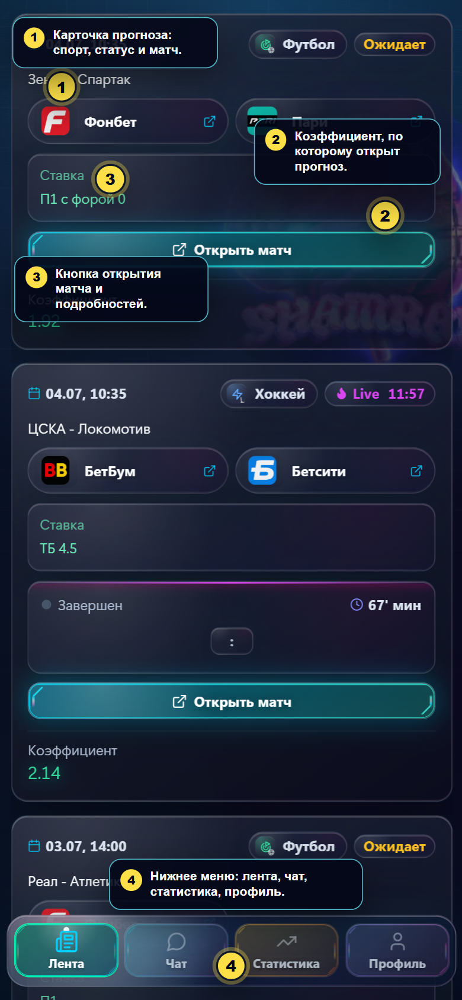
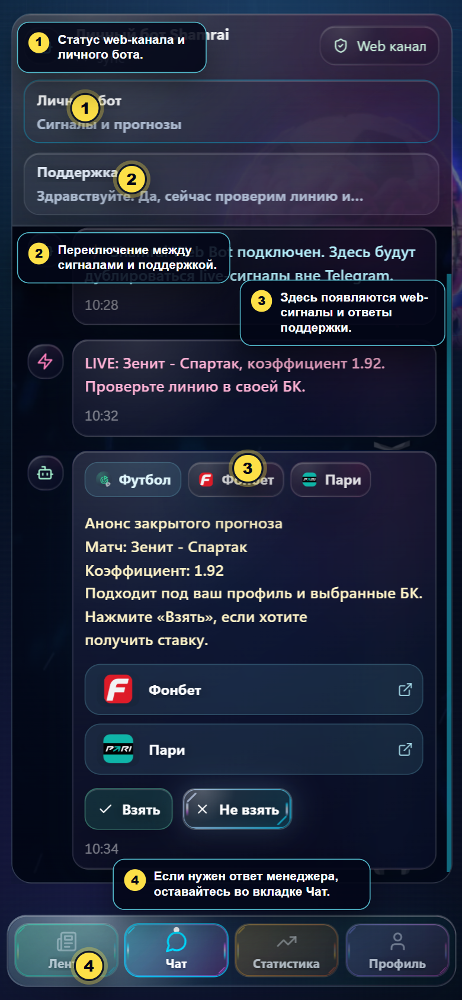
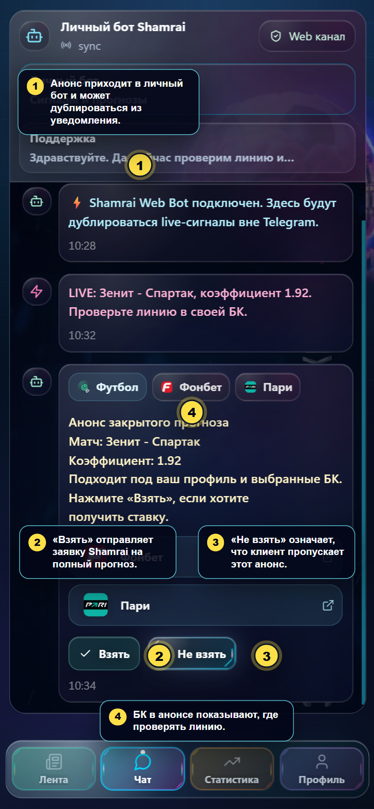
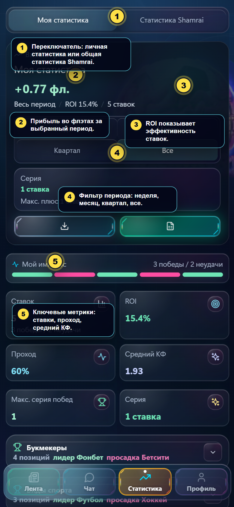
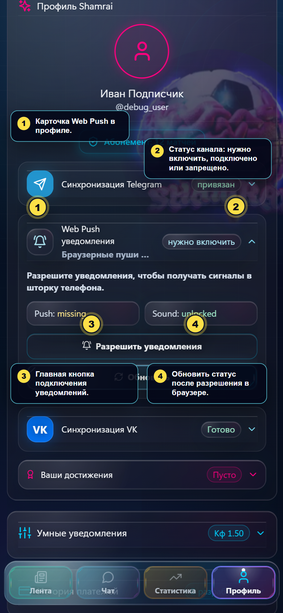
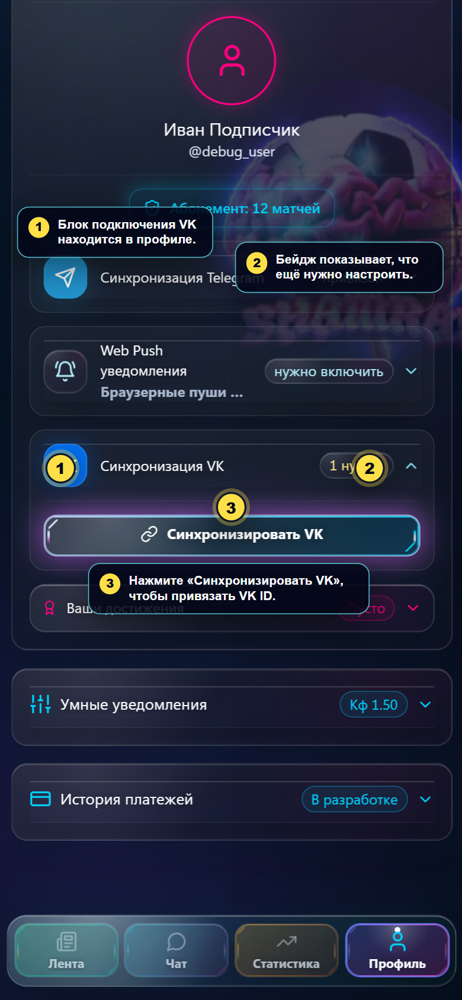
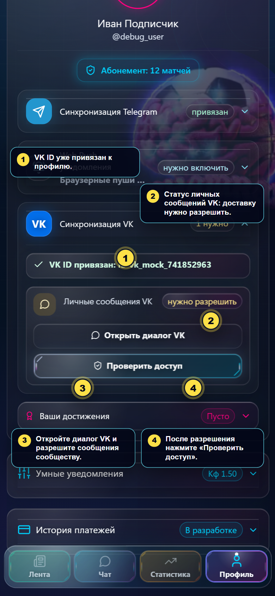
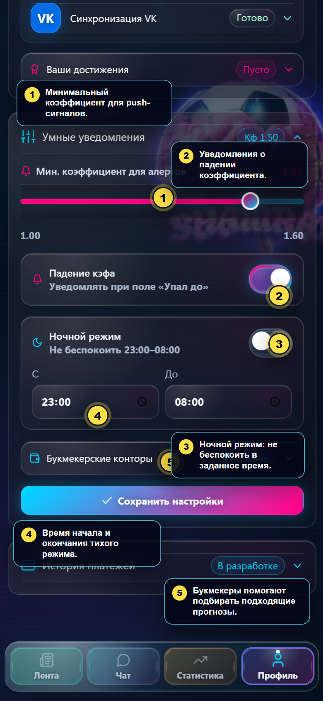

Клиентское обучение Shamrai
Короткий гид по клиентскому кабинету: где смотреть прогнозы, как включить VK и web-уведомления, где читать статистику и как настроить уведомления.
Лента прогнозов
Здесь клиент видит прогнозы, статус матча, букмекера, ставку и коэффициент.
- Карточка показывает вид спорта, статус события и матч.
- Коэффициент показывает значение, по которому открыт прогноз.
- Кнопка Открыть матч ведёт к подробностям.
- Нижнее меню переключает ленту, чат, статистику и профиль.

Чат и web-сигналы
Во вкладке чата клиент получает дубли web-сигналов и может написать в поддержку.
- Статус Web канал показывает, что web-доставка активна.
- Внутри чата видны сигналы и сообщения поддержки.
- Если нужен ответ менеджера, клиент остаётся во вкладке Чат.

Как взять ставку после анонса
Когда Shamrai отправляет персональный анонс, клиент выбирает, нужен ли ему полный прогноз.
- Получить анонс через Telegram, VK, Web Push или web-чат.
- Открыть Чат -> Личный бот.
- Проверить матч, коэффициент и доступные БК.
- Нажать Взять, если нужен полный прогноз.
- Нажать Не взять, если прогноз не подходит.
- После Взять заявка уходит Shamrai, а полный прогноз приходит в подключённый канал.
Обычная открытая публикация в Ленте может быть без кнопки Взять. Кнопка появляется у персональных анонсов.

Статистика
Вкладка помогает понять личный результат и сравнить его с общей статистикой Shamrai.

Подключение Web Push
- Открыть Профиль.
- Раскрыть Web Push уведомления.
- Нажать Разрешить уведомления.
- В системном окне браузера выбрать Разрешить.
- Вернуться в профиль и нажать Обновить, если статус не изменился сразу.
Если статус стал запрещено, уведомления нужно разрешить в настройках браузера или телефона.

Иконка Shamrai на главном экране
После подключения Web Push лучше вынести Shamrai на рабочий стол телефона. Клиент открывает сайт с иконки как обычное приложение и быстрее видит анонсы.
Android
- Открыть https://shamra1.pro/ в Chrome или основном браузере телефона.
- Нажать меню ⋮ справа от адресной строки.
- Выбрать Установить приложение или Добавить на главный экран.
- Оставить название Shamrai и нажать Добавить.
- После этого запускать Shamrai с новой иконки на рабочем столе.
iPhone
- Открыть https://shamra1.pro/ именно в Safari.
- Нажать кнопку Поделиться. Если внизу видна кнопка …, сначала нажать её, затем Поделиться.
- Прокрутить список и выбрать На экран «Домой».
- Проверить название Shamrai и нажать Добавить.
- Дальше открывать Shamrai с иконки на домашнем экране.
На iPhone web-уведомления обычно работают для web-приложения после добавления на экран «Домой» и запуска Shamrai с этой иконки.
Подключение VK
- Открыть Профиль.
- Раскрыть Синхронизация VK.
- Нажать Синхронизировать VK.
- Подтвердить вход через VK ID и вернуться в Shamrai.
Если после привязки остаётся статус 1 нужно, нужно разрешить личные сообщения от сообщества VK.

Разрешение сообщений VK
- В профиле открыть Синхронизация VK.
- Нажать Открыть диалог VK.
- Разрешить сообщения от сообщества.
- Вернуться в Shamrai и нажать Проверить доступ.
- После подтверждения бейдж VK должен стать Готово.

Настройки уведомлений
- Мин. коэффициент задаёт порог для push-сигналов.
- Падение кэфа включает уведомления о просадке коэффициента.
- Ночной режим задаёт время, когда push-уведомления не беспокоят.
- Букмекерские конторы помогают подбирать подходящие прогнозы.
- После изменений нужно нажать Сохранить настройки.

Короткий FAQ
Где подключить VK?
Профиль -> Синхронизация VK -> Синхронизировать VK.
Где включить web-уведомления?
Профиль -> Web Push уведомления -> Разрешить уведомления.
Как вынести Shamrai на главный экран телефона?
Android: открыть https://shamra1.pro/ в Chrome -> меню ⋮ -> Установить приложение или Добавить на главный экран. iPhone: открыть сайт в Safari -> Поделиться -> На экран «Домой» -> Добавить.
Где смотреть статистику?
Вкладка Статистика в нижнем меню.
Что делать, когда пришёл анонс ставки?
Открыть Чат -> Личный бот и нажать Взять. Если прогноз не нужен, нажать Не взять.
Почему VK показывает "1 нужно"?
VK ID привязан, но сообщения от сообщества ещё не разрешены. Откройте диалог VK, разрешите сообщения и нажмите Проверить доступ.